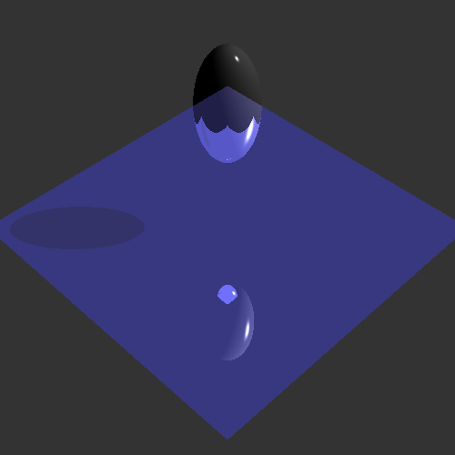
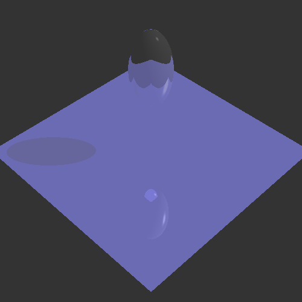
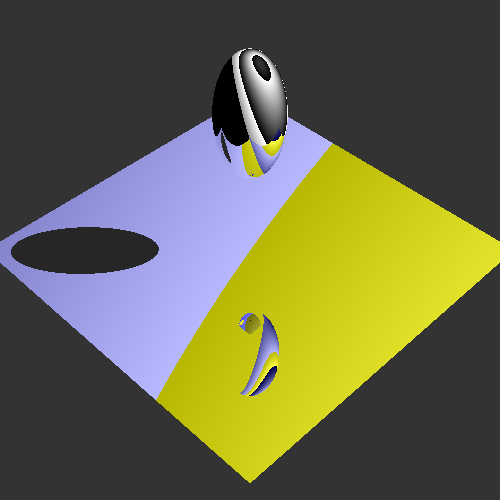
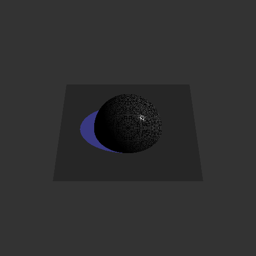

Graham Smith (gsmith98)
Graphics HW2
This assignment was written in Microsoft Visual Studio Community 2015 On a Windows 7 Ultimate (x64) machine. From what I can tell from the info panel, this means I was using Visual C++ 2015. According to this post, that means I was compiling with Microsoft (R) C/C++ Optimizing Compiler Version 19.XX.YYYYY for x64. I have tested that I was able to compile and run my submission by opening the .sln and using Visual Studio's "Build -> Build Solution", exactly the same way the code skeleton provided to us can be built.
2 late days used
Every function listed on the assignment page has been fully implemented up to and including the 5 Accelerated Ray tracing points, and with the addition of RayBox intersect. I am additionally submitting a few images and one ray file (which also satisfies the conditions for the 1 point "Generate a 3D scene...") to the art contest. All the images shown below have been produced by my own code from ray files. If there is any issue with this submission, please let me know and I can work with you to remedy it.
- Reference:
|  |
test.ray (reference version) |
This image encapsulates all the working steps covered by the reference progress page. To reproduce the image above with my code, there are 3 lines in rayScene.todo.cpp that you will need to uncomment (they are each labeled with an "uncomment this" comment). This is because implementations I made beyond the reference changed the way test.ray would be drawn. You can see my explanation in this Piazza post.
- test.ray:
|  |
test.ray (changed version) |
The changes here are: refraction added, background considered for reflection/refraction, transparency being treated as a weighted average. I agree with all these changes (again, see Piazza post), especially when you consider the difference made on the butterfly image:
- Butterfly at the Lake:
|
|
butterfly (reference version) |
butterfly (changed version) |
Look closely at the wings to see the differences my changes were meant to address. The better butterfly is my submission to the ray art contest, and it also satisfies: "(1) Generate a 3D scene and save it as a .ray file. The scene should have both spheres and triangles, should have all three types of light sources in it, and should contain at least one primitive with a transparent material." I wrote python code to help me create this ray file that I included with my submission as "raymaker.py".
- Box:
Working box intersect (and bounding box).
Accelerated ray tracing is also implemented, though there is no visual difference to show here.
- Art:
|  |
 |
|
"MouseRise" |
"Subcontinental" |
"Eyeball" |